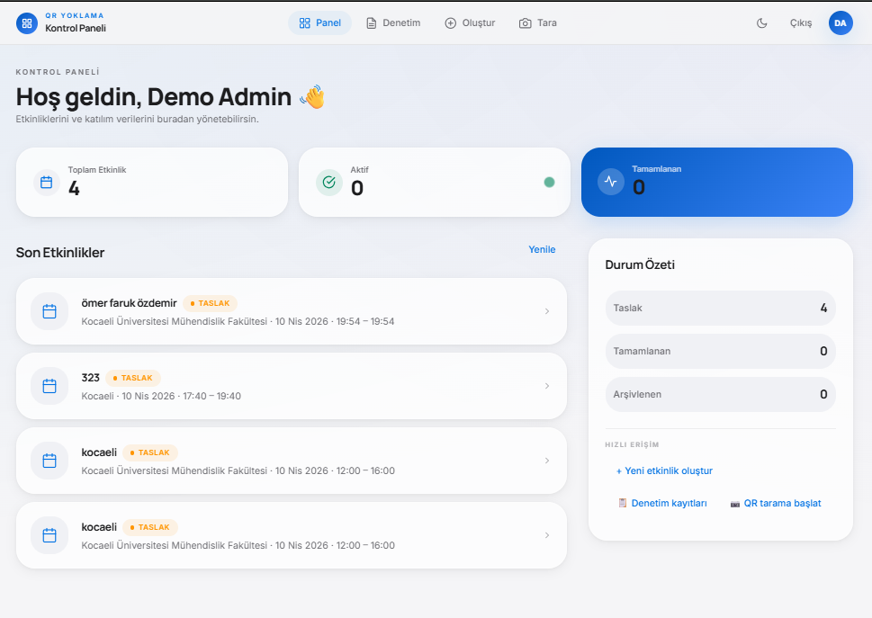
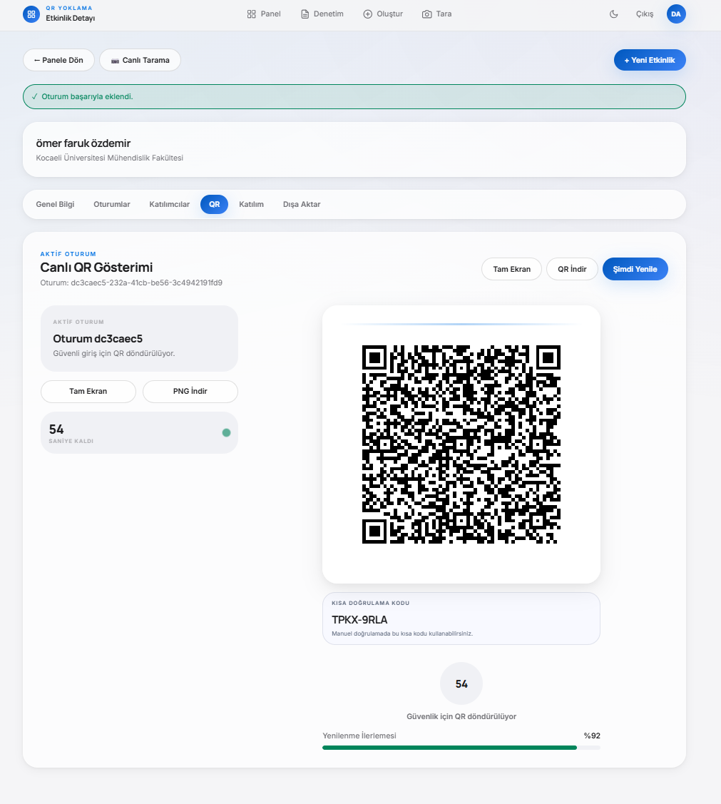
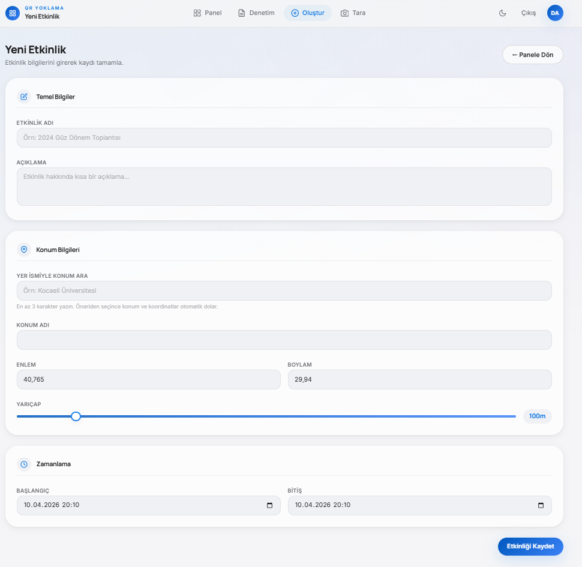
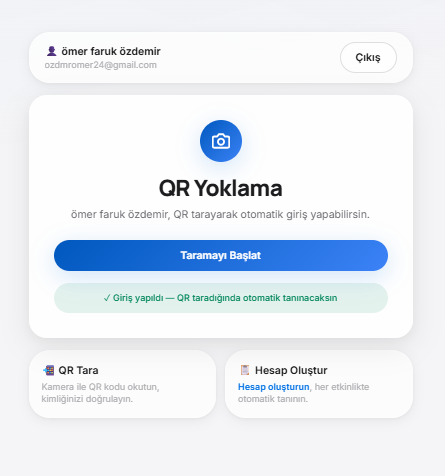
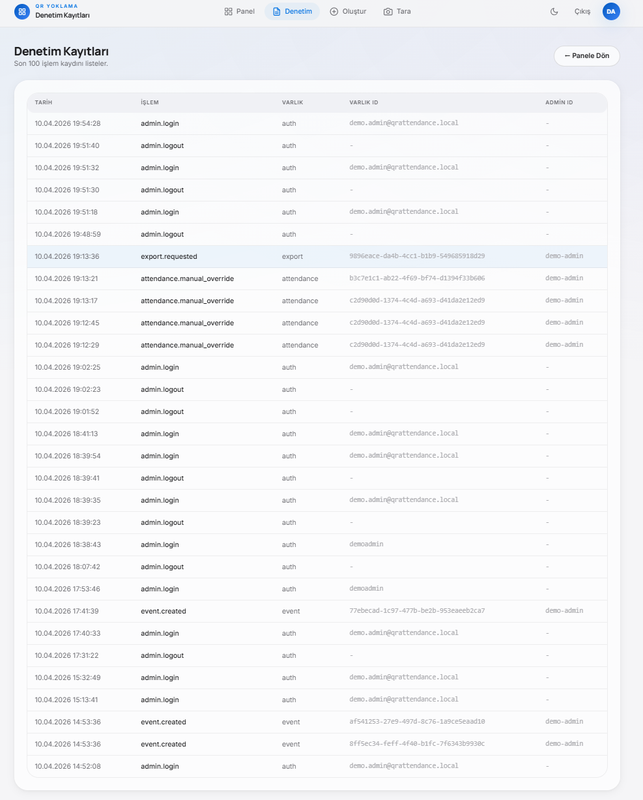
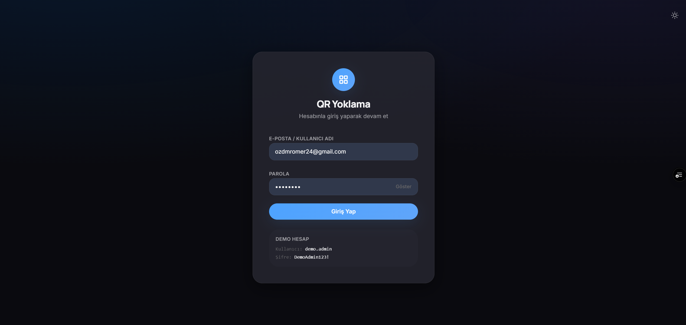

Etkinlik katılımını hızlı, güvenli ve denetlenebilir hale getiren uçtan uca web platformu
Bu sunumda projenin çıkış problemini, teknik mimarisini, geliştirme kararlarını, canlı ekranlarını ve staj sürecindeki katkılarımı adım adım anlatıyorum.
Neler paylaşacağım?
Sunum boyunca her ekranı yalnızca görsel olarak değil, arkasındaki iş kuralı ve teknik karar ile birlikte açıklayacağım.

Neyi çözmek istedim?
Çözüm hedefim, tek bir platformda etkinlik planlama, kimlik doğrulama, katılım kaydı ve denetim süreçlerini birleşik şekilde yönetebilmekti.
Böylece hem organizasyon ekiplerinin operasyonel yükünü azaltmak, hem de katılımcı deneyimini hızlandırmak mümkün hale geldi.
Kapsamı nasıl belirledim?
Projeyi sadece bir check-in ekranı değil, yönetilebilir bir ürün olarak ele aldım. Bu nedenle kapsamı üç ana modül üzerinden netleştirdim: yönetim paneli, katılımcı akışı ve denetim sistemi.
Başarı kriterlerini proje başında somutlaştırdım:
Kullandığım yapı
Uygulamada web arayüzü, API katmanı ve veritabanı tarafını birlikte ele aldım. Böylece hem kullanıcı deneyimini hem de sistem dayanıklılığını aynı anda iyileştirme şansım oldu.
Frontend tarafında hızlı arayüz akışı; backend tarafında doğrulama, yetkilendirme ve kuralların merkezi yönetimi; veritabanında ise tutarlı kayıt yapısı ile sürdürülebilir bir temel kuruldu.
Mimari kararların temel hedefi; geliştirme sırasında hız kazanmak, sonrasında ise bakım maliyetini düşürmekti.
Panelde anlık görünürlük
Bu ekran, organizatörün "sistemin o anki durumu" sorusuna birkaç saniyede yanıt almasını sağlıyor. Operasyonel kararlar tek panelden alınabildiği için saha ekibiyle koordinasyon kolaylaşıyor.
Etkinlik detayında canlı QR üretimi

Bu yaklaşım sayesinde doğrulama yalnızca "kamera okudu" seviyesinde kalmıyor; süreçte hem kullanıcı hem sistem tarafında ek doğrulama katmanları devreye giriyor.
Etkinlik oluşturma deneyimi

Etkinlik bilgileri doğru girildiğinde, devamındaki QR üretimi, katılımcı doğrulaması ve raporlama adımları daha sorunsuz işliyor.
Katılımcı için hızlı giriş ekranı

Kullanıcı deneyimindeki ana kararım, gereksiz alanları kaldırmak ve kullanıcıyı tek bir ana aksiyona yönlendirmek oldu. Bu da işlem süresini gözle görülür biçimde kısalttı.
Denetim ekranıyla geriye dönük takip

Bu yapı, yalnızca güvenlik için değil, operasyonel şeffaflık için de güçlü bir temel sağlıyor.
Olası bir tutarsızlık durumunda geriye dönük iz sürmek mümkün olduğu için ekipler sorunlara daha hızlı ve veriye dayalı müdahale edebiliyor.
Yetkili giriş deneyimi

Bu ekranla birlikte yetki sınırları daha net hale geldi ve yönetim araçlarına erişim yalnızca doğrulanan kullanıcılarla sınırlandırıldı.
Karşılaştığım kritik problemler ve çözümler
Bu iyileştirmeler sonrası sistem hem teknik olarak daha stabil hale geldi hem de kullanıcı tarafındaki akış daha tutarlı çalışmaya başladı.
Staj sürecinde öğrendiğim en önemli nokta, bir problemi çözerken yalnızca kodu değil kullanıcı davranışını ve operasyon etkisini de birlikte değerlendirmek gerektiğiydi.
Proje çıktıları ve kişisel kazanımlar
Sonuç olarak proje, sadece çalışan bir demo değil; geliştirilebilir, anlatılabilir ve ekip içinde sürdürülebilir bir temel haline geldi.
Sorularınızı memnuniyetle yanıtlarım.
İsterseniz devamında canlı demoda etkinlik oluşturma, QR doğrulama ve denetim kayıtlarının nasıl çalıştığını kısa bir senaryo ile gösterebilirim.